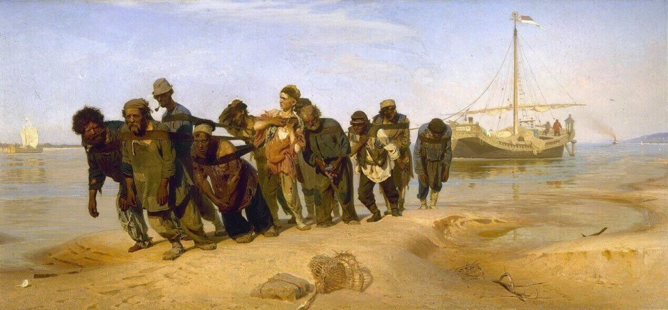

Илья Ефимович Репин
Бурлаки на Волге. 1870-1873 гг.
Илья Репин впервые увидел бурлаков на Ниве. И так был поражён их жалким видом,
особенно в контрасте с отдыхающими неподалёку дачниками, что решение писать картину тут же созрело.Холёных дачников
Репин не стал писать. Но контраст все же в картине присутствует. Грязное отрепье бурлаков противопоставлено
идиллистическому пейзажу.Может быть, для 19 века это выглядело не так вызывающе. Но для современного человека такой
вид работника кажется удручающим.Да ещё Репин пароход на заднем плане изобразил. Который мог бы быть использован в
качестве буксира, чтобы людей не мучить. В реальности бурлаки не были настолько обездолены. Их хорошо кормили,
после обеда всегда давали поспать. А за сезон они зарабатывали столько, что зимой могли прокормить себя, не работая.
Репин взял для картины сильно вытянутый по горизонтали холст. И удачно выбрал угол зрения. Бурлаки идут к нам
навстречу, но при этом не загораживают друг друга. Мы легко можем рассмотреть каждого из них. И самого главного
бурлака с лицом мудреца. И молодого парня, который никак не приноровится к лямке. И предпоследнего грека,
который оглядывается на доходягу. С каждым в упряжке Репин был лично знаком. Вёл с ними долгие беседы про жизнь.
Поэтому они и получились такими разными, каждый со своим характером.